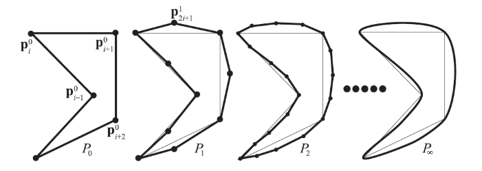
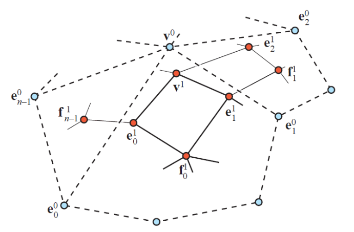

Powierzchnie
Modele powierzchniowe
- Reprezentacja obiektu 3D za pomocą powierzchni brzegowych
- Każdy punkt na powierzchni opisany parametrycznie \(P(u,v)\)
- Cechy
- dokładny opis matematyczny
- dobre właściwości krzywizn
- definicja z wykorzystaniem punktów sterujących
- Przykłady
- powierzchnie Beziera
- B-spline
- NURBS
Powierzchnie Beziera
- Powierzchnię Beziera opisują dwa zbiory krzywych Bezeira prowadzonych w płaszczyznach prostopadłych do siebie
- Opis położenia punktu
- \(P(u,v) = \sum_{j=0}^m\sum_{k=0}^n p_{j,k} B_{j,m}(v) B_{k,n}(u)\)
- \(p_{j,k}\) - punkty sterujące
- \(B_{j,m}(v) B_{k,n}(u)\) - funkcje bazowe
- Łatwa modyfikacja kształtu powierzchni
- położenie punktów sterujących
- Model często składa się z kilku części
- płaty Beziera - zwykle 16 punktów sterujących
Powierzchnie określone niejawnie (uwikłane)
- Zbiór punktów będących miejscami zerowymi pewnej funkcji F - pola gęstości
- Konieczność znajdowania jawnej reprezentacji, w celu np. narysowania
jej
- obliczenie wartości F dla punktów siatki, której wierzchołki to miejsca zerowe F
- interpolacja funkcji wzdłuż krawędzi siatki - szukanie przybliżonych punktów przecięcia krawędzi z powierzchnią zadaną niejawnie
- tworzenie trójkątów o wierzchołkach na krawędziach
- Kategorie powierzchni
- algebraiczne
- niealgebraiczne - reprezentacja za pomocą zbioru cząstek
- Gładkie łączenia
- Wysoki koszt obliczeń
Metakule
- ang. metaballs
- punkt środkowy \(C\)
- promień oddziaływania \(R\)
- funkcja gęstości \(f\)
- wartość progowa \(T\)
- Punkty należące spełniają \(f(\frac{r}{R})-T=0\)
- \(r\) - odległość punktu od środka metakuli
- Często używana funkcja gęstości (Wyvil)
- \(f(s)=1-\frac{4}{9}s^6+\frac{17}{4}s^4-\frac{22}{9}s^2\)
- Łączenie
- każda cząstka to kula o pewnej funkcji gęstości
- gdy cząstki zbliżają się do siebie, ich gęstości dodają się
Metoda kolejnych podziałów
- Metody służące do tworzenia gładkich krzywych i powierzchni
- Coś pomiędzy dyskretnymi powierzchniami (siatki trójkątów), a ciągłymi powierzchniami
- Krzywe
- podejście aproksymacyjne - obcinanie wierzchołków
- podejście interpolacyjne - zachowanie wierzchołków początkowych
Obcinanie rogów

- Algorytm iteracyjny
- W każdej iteracji odcinane są rogi wielokąta
- Powstaje nowy wielokąt posiadający 2 razy więcej wierzchołków
- Schemat podziałów Chaikina
- \(p_{2i}^{k+1} = \frac{3}{4}p_i^k + \frac{1}{4}p_{i+1}^k\)
- \(p_{2i+1}^{k+1} = \frac{1}{4} p_i^k + \frac{3}{4} p_{i+1}^k\)
Podejście interpolacyjne
 * Schemat podziałów * \(p_{2i}^{k+1} = p_i^k\) * \(p_{2i+1}^{k+1} = (\frac{1}{2} + 2)(p_i^k+p_{i+1}^k) - w(p_{i-1}^k+p_{i+2}^k)\) * \(w\) - parametr naprężenia * \(w=0\) - interpolacja liniowa
Podział powierzchni
- Faza udoskonalenia siatki
- tworzenie nowych wierzchołków
- łączenia w celu stworzenia nowych trójkątów
- Faza wygładzania
- obliczanie nowych pozycji dla niektórych/wszystkich wierzchołków
Wierzchołki
- Stopień wierzchołka - liczba przylegających krawędzi
- Siatka regularna - wszystkie stopnie wierzchołków są takie same
Podział Loop’a
- Każdy trójkąt generuje 4 nowe trójkąty przy podziale
- Zasady podziału
- \(p^{k+1} = (1-n\beta)p^k + \beta(p_0^k + \ldots + p_{n-1}^k)\)
- \(p_i^{k+1} = \frac{1}{8}(3p^k+3p_i^k+p_{i-1}^k+p_{i+1}^k)\)
- \(i=0 \ldots n-1\)
- \(p^{k+1}\) - obecny wierzchołek
- \(p_i^{k+1}\) - nowy wierzchołek pomiędzy \(p^k\) i każdym z \(p_i^k\)
- \(n\) - stopień wierzchołka
- Obliczenia modulo \(n\)
- Stała \(\beta(n) = \frac{1}{n}(\frac{5}{8} - \frac{(3+2\cos(\frac{2\pi}{n}))^2}{64})\)
Catmull-clark

- Potrafi dzielić siatki wielokątów
- Schemat podziału generuje tylko face’y z 4 wierzchołkami
- Dla każdego face’a generuje centroid \(f_j^{k+1}\)
- \(v^{k+1} = \frac{n-2}{n}v^k + \frac{1}{n^2} \sum_{j=0}^{n-1}e_j^k + \frac{1}{n^2}\sum_{j=0}^{n-1}f_j^{k+1}\)
- \(e_j^{k+1} = \frac{1}{4}(v^k+e_j^k+f_{j-1}^{k+1} + f_j^{k+1})\)
- \(v\) - wierzchołek
- \(e\) - punkt na krawędzi
- \(n\) - liczba sąsiadów